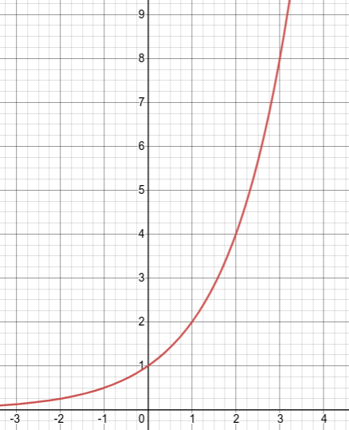
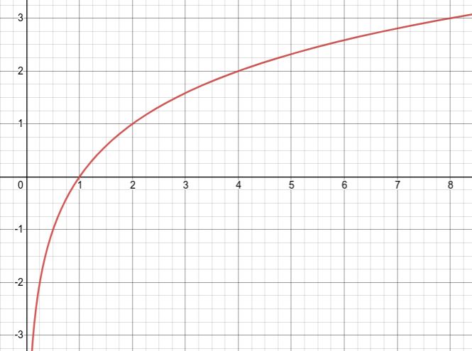

Section 2.1 Exponential and Logrithmic Functions
Subsection 2.1.1 Exponential Functions
Note 2.1.1. The nine fules for exponents:.
\(\displaystyle a^m \cdot a^n = a^{m+n}\)
\(\displaystyle \left(a^m\right)^n = a^{m \cdot n}\)
\(\displaystyle \dfrac{a^m}{a^n} = a^{m-n} \)
\(\displaystyle a^0 = 1\)
\(\displaystyle a^{-1} = \dfrac{1}{a^n} \)
\(\displaystyle (a\cdot b)^n = a^n \cdot b^n \)
\(\displaystyle \left(\dfrac{a}{b}\right)^n = \dfrac{a^n}{b^n}\)
\(\displaystyle a^{\frac{1}{n}} = \sqrt{a} \)
\(\displaystyle a^{\frac{m}{n}} = \left(\sqrt[n]{a}\right)^m \text{or } \sqrt[n]{(a)^m} \)
Definition 2.1.2. Exponential Function.
A function that can be written in the form \(f(x)=b^x\) where \(b > 0 \) and \(b \ne 1\) is called an exponential function.
x
f(x)
-3
\(\frac{1}{8}\)
\(2^{-3}=\frac{1}{8}\)
-2
\(\frac{1}{4}\)
\(2^{-2}=\frac{1}{4}\)
-1
\(\frac{1}{2}\)
\(2^{-1}=\frac{1}{2}\)
0
1
\(2^0 = 1\)
1
2
\(2^1=2\)
2
4
\(2^2=4\)
3
8
\(2^3=8\)

If you graph \(f(x)=\left(1+\frac{1}{x}\right)^x\text{,}\) you get a horizontal asymptote at \(y=e\text{.}\) If you graph \(y=e^x\) the slope of the tangent line at any point is equal to the height of the fundtion, therefore the derivative with respect to x of \(e^x\) is \(e^x\text{.}\)
Definition 2.1.5. Euler's Number.
Subsection 2.1.2 Logrithms
\(\displaystyle log_a(a^m)= m \) \(\displaystyle a^{log_a m} = m \) \(\displaystyle log_a (m \cdot n) = log_a m + log_a n \) \(\displaystyle log_a\left(\dfrac{m}{n}\right) = log_a m - log_a n \) \(\displaystyle log_a (m ^ r) = r \cdot log_a m \)
Note 2.1.6. The Five Properties of Algorithms.
Definition 2.1.7. Logrithm.
If \(a > 0\) and \(a \neq 1\text{,}\) and if \(c > 0\text{,}\) then \(log_a c = b\) means \(a^b = c\text{.}\)
x
f(x)
\(\frac{1}{8}\)
-3
\(log_2 \frac{1}{8} = -3\)
\(\frac{1}{4}\)
-2
\(log_2 \frac{1}{4} = -2\)
\(\frac{1}{2}\)
-1
\(log_2 \frac{1}{2} = -1\)
1
0
\(log_2 1 = 0\)
2
1
\(log_2 2 = 1\)
4
2
\(log_2 4 = 2\)
8
3
\(log_a 8 = 2\)

Note 2.1.10. Additional Notation.
\(ln \rightarrow log_e \) "natural log"
\(log \rightarrow log_{10} \) "common log"
Definition 2.1.11. Change of Base Formula.
For any bases a and b (positive and \(\neq 1\)) and number M: